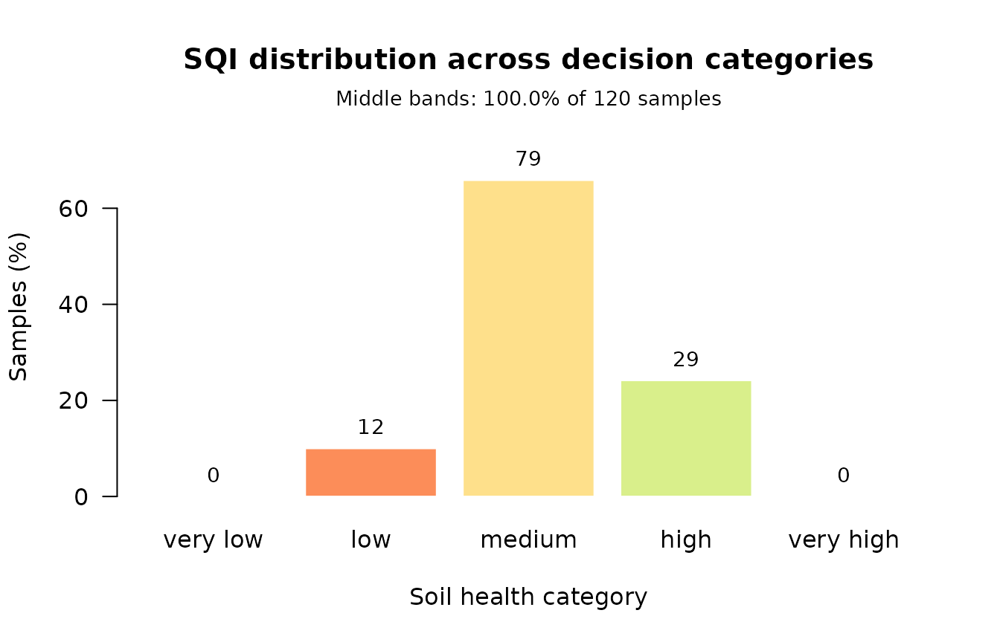

Building and validating a Soil Quality Index
Source:vignettes/building-and-validating-an-sqi.Rmd
building-and-validating-an-sqi.RmdA soil quality index is a pipeline of five decisions, and this package now offers a choice at every one of them:
select → group → score → weight → aggregate → VALIDATEThe last step is the one most often skipped, and the one this vignette treats as the point of the exercise. An index has no ground truth. Nothing tells you whether yours is right. What you can establish is whether it discriminates, and whether your conclusion survives building it differently.
We use soil_structured, which is simulated but carries
the covariance real soil has: texture summing to 100, organic carbon
tied to organic matter, exchange capacity generated by clay and organic
colloids.
props <- c("Sand", "Silt", "Clay", "BD", "pH", "OM", "SOC",
"N", "P", "K", "CEC", "Ca", "Mg", "S", "EC")
str(soil_structured[, props[1:6]])
#> 'data.frame': 120 obs. of 6 variables:
#> $ Sand: num 45.5 60.6 46.3 45.8 59.2 70 57.4 59.1 43.5 45.9 ...
#> $ Silt: num 24.4 27.7 32.8 33.4 19.7 22 25.8 24.5 30.4 32.7 ...
#> $ Clay: num 30.1 11.7 20.9 20.8 21.1 8 16.8 16.4 26.1 21.4 ...
#> $ BD : num 1.41 1.49 1.58 1.47 1.75 1.65 1.67 1.63 1.63 1.5 ...
#> $ pH : num 5.5 5.2 6.1 6.1 5 5.3 5.3 4.7 6.3 4.8 ...
#> $ OM : num 5.42 4.98 3.27 4.1 0.9 2.97 2.1 2.52 3.24 4.27 ...Step 0. Is the data worth factoring at all?
Almost no published index checks this. It costs one line.
pca_adequacy(soil_structured[, c("pH", "OM", "N", "P", "K", "CEC", "BD")])
#> PCA adequacy
#> Observations: 120 Indicators: 7
#>
#> Kaiser-Meyer-Olkin: 0.813 (meritorious)
#> Indicators below 0.60, worth considering for removal:
#> pH 0.353
#>
#> Bartlett's test of sphericity
#> chi-squared = 1012.73, df = 21, p = 5.423e-201
#> The matrix differs from the identity, so there is structure to
#> factor. Note this test rejects on almost any real soil data.Note what happens when the particle-size fractions are included: they sum to 100 by construction, the correlation matrix becomes singular, and KMO is undefined. That is a property of compositional data, not a bug, and the function says so rather than returning a number.
pca_adequacy(soil_structured[, c("Sand", "Silt", "Clay", "pH", "OM")])$kmo_message
#> [1] "The correlation matrix is singular, so it cannot be inverted and KMO is undefined. This usually means some indicators are exactly collinear -- particle-size fractions summing to 100 is the classic case."Step 1. Select a minimum data set
Two routes, rewarding different things. PCA favours indicators carrying variance; correlation-network analysis favours hubs.
std <- standardize_numeric(soil_structured[, props])
pca_route <- pca_select_mds(std)
pca_route$mds
#> [1] "pH" "Silt"
net_route <- na_select_mds(soil_structured[, props])
net_route$mds
#> [1] "OM" "CEC"They disagree completely here, and that disagreement is informative
rather than embarrassing: mds_consensus() returns the
intersection, and an empty intersection is a signal to look at the data
before trusting either.
The relative loading rule
pca_select_mds() takes one indicator per component by
default. The rule stated in the literature keeps everything within 10 %
of the top loading, which usually gives a larger set:
length(pca_select_mds(std)$mds)
#> [1] 2
length(pca_select_mds(std, within = 0.10)$mds)
#> [1] 2Step 2. Group by function
Selecting across the whole pool lets one dominant function crowd out the others. Here, ungrouped selection leaves entire functions unrepresented:
groups <- assign_function_groups(props)
names(groups)
#> [1] "carbon_cycling" "nutrient_cycling" "physical_structure"
#> [4] "buffering_filtration"
grouped <- pca_select_mds(std, groups = groups, selector = "norm")
grouped$mds
#> [1] "OM" "P" "Sand" "EC"Group by function, not by physical/chemical/biological — Maaz et al. (2023) tested that familiar split by confirmatory factor analysis and found it has no statistical support.
Step 3. Score
Linear is the package default. The sigmoidal curve dominates the literature:
mds <- grouped$mds
linear_rules <- standard_scoring_rules(mds, scoring = "linear")
sigmoid_rules <- standard_scoring_rules(mds, scoring = "sigmoid")
sigmoid_rules[[1]]
#> Scoring Rule: sigmoid_scoring
#> Type: Non-linear (sigmoidal) scoring
#> Direction: Higher values are better
#> Reference (x0): mean of the indicator
#> Shape (b): 2.5The literature contradicts itself on which is better, so compute both and check whether your conclusion moves. That is Step 6.
Scoring against a reference soil
Both of the above normalise against your own sample, which forces the best site to score about 1 whatever its condition. Scoring against an undisturbed reference is the documented escape — at the cost of needing a defensible reference soil.
reference_rules <- list(
OM = reference_scoring(reference = 5.5),
BD = reference_scoring(reference = 1.05, direction = "lower"),
pH = reference_scoring(reference = 6.5, direction = "optimum",
tolerance = 1.5)
)
reference_rules$BD
#> Scoring Rule: reference_scoring
#> Type: Standardised against a reference soil
#> Direction: Lower values are better
#> Reference: 1.05Steps 4 and 5. Weight and aggregate
Weighting is the most contested step in the whole pipeline, which is a good reason to try skipping it. The area route ignores weights entirely.
weighted <- compute_sqi_properties(
soil_structured, properties = mds, id_column = "SampleID",
scoring_rules = linear_rules, method = "weighted"
)
area <- compute_sqi_properties(
soil_structured, properties = mds, id_column = "SampleID",
scoring_rules = linear_rules, method = "area"
)
summary(weighted$results$SQI)
#> Min. 1st Qu. Median Mean 3rd Qu. Max.
#> 0.2697 0.4816 0.5266 0.5382 0.5949 0.7991Step 6. Validate — the point of all this
validation <- sqi_validate(weighted)
#> Warning: 100% of samples fall in the middle bands (threshold 80%). An index
#> that declines to separate samples cannot inform a decision, however well it
#> correlates with anything else. Consider a scoring or aggregation route that
#> discriminates more strongly -- see sqi_stability().
validation
#> Soil Quality Index validation
#> Samples: 120
#>
#> Distribution across decision categories
#> very low 0 0.0%
#> low 12 10.0% ####
#> medium 79 65.8% ##########################
#> high 29 24.2% ##########
#> very high 0 0.0%
#>
#> Middle bands: 100.0% of samples
#> WARNING: above the 80% threshold. This index declines to separate
#> most samples, so it cannot inform a decision.
#>
#> Sensitivity index (max/min): 2.96
#> Range: 0.2697 to 0.7991 (mean 0.5382, sd 0.1019)The distribution across decision categories is the headline, not the correlation with anything. Maaz et al. found two indices correlating at r = 0.96 while one put 94 % of plots in the middle band and the other 61 %. An index that calls everything “medium” cannot inform a decision, however well it correlates.
plot_sqi_validation(validation)
Does the conclusion survive a change of recipe?
sigmoid <- compute_sqi_properties(
soil_structured, properties = mds, id_column = "SampleID",
scoring_rules = sigmoid_rules
)
sqi_stability(linear = weighted, sigmoid = sigmoid, area = area)
#> Soil Quality Index recipe stability
#> Samples: 120
#> Indices: linear, sigmoid, area
#>
#> Pairwise rank agreement
#> linear vs sigmoid rho = 0.948 top kept bottom kept
#> linear vs area rho = 0.903 top kept bottom kept
#> sigmoid vs area rho = 0.870 top kept bottom kept
#>
#> Both extremes are preserved across every pair: the choice of
#> recipe does not change which sample is best or worst.A high rank correlation does not rescue a changed extreme. If the top field is what you act on and it moves when you switch scoring functions, you do not have a result — you have an artefact of the recipe.
Fidelity to everything you measured
tds <- compute_sqi_df(
soil_structured[, c("SampleID", props)],
id_column = "SampleID", select = "none"
)
sqi_validate(weighted, tds = tds)$fidelity
#> Warning: 100% of samples fall in the middle bands (threshold 80%). An index
#> that declines to separate samples cannot inform a decision, however well it
#> correlates with anything else. Consider a scoring or aggregation route that
#> discriminates more strongly -- see sqi_stability().
#> $r_squared
#> [1] 0.04239681
#>
#> $n
#> [1] 120Read this carefully: the total-data-set index is not ground truth. It is the index with everything in it. High fidelity means your reduced set is faithful to your full measurement set, not that either is correct.
A decision table
| Step | Options | Default | When to change it |
|---|---|---|---|
| Select |
pca_select_mds, na_select_mds, expert
list |
PCA | Network when hubs matter more than variance, or normality is doubtful |
| Group |
groups = NULL, soil_function_groups
|
none | Whenever more than one soil function matters |
| Score | linear, sigmoid, optimum, threshold, reference | linear | Sigmoid to reproduce most published work; reference for cross-study comparability |
| Weight | AHP, loading, centrality, equal | equal | AHP when you have defensible expert judgement |
| Aggregate |
"weighted", "area"
|
weighted | Area to sidestep weighting entirely |
| Validate |
sqi_validate, sqi_stability
|
— | Always |
One warning worth repeating
Do not build an index from predicted properties. Chaudhry et al. (2024) found that computing an SQI from spectrally predicted properties gave R² = 0.23, while predicting the index directly from the same spectra gave R² = 0.90 — with individually acceptable property models. If you only have predictions, model the index itself.